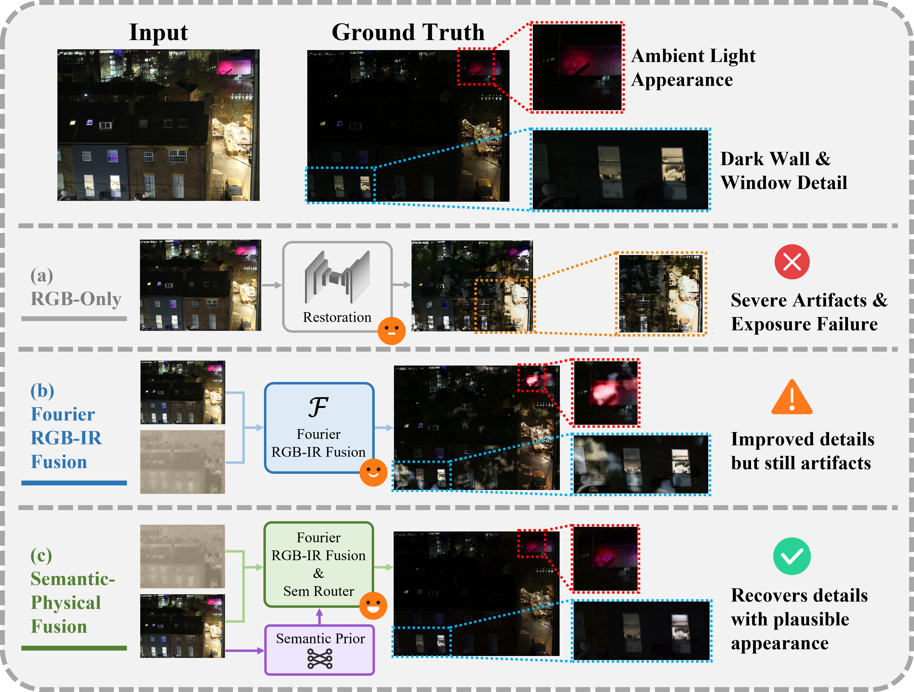
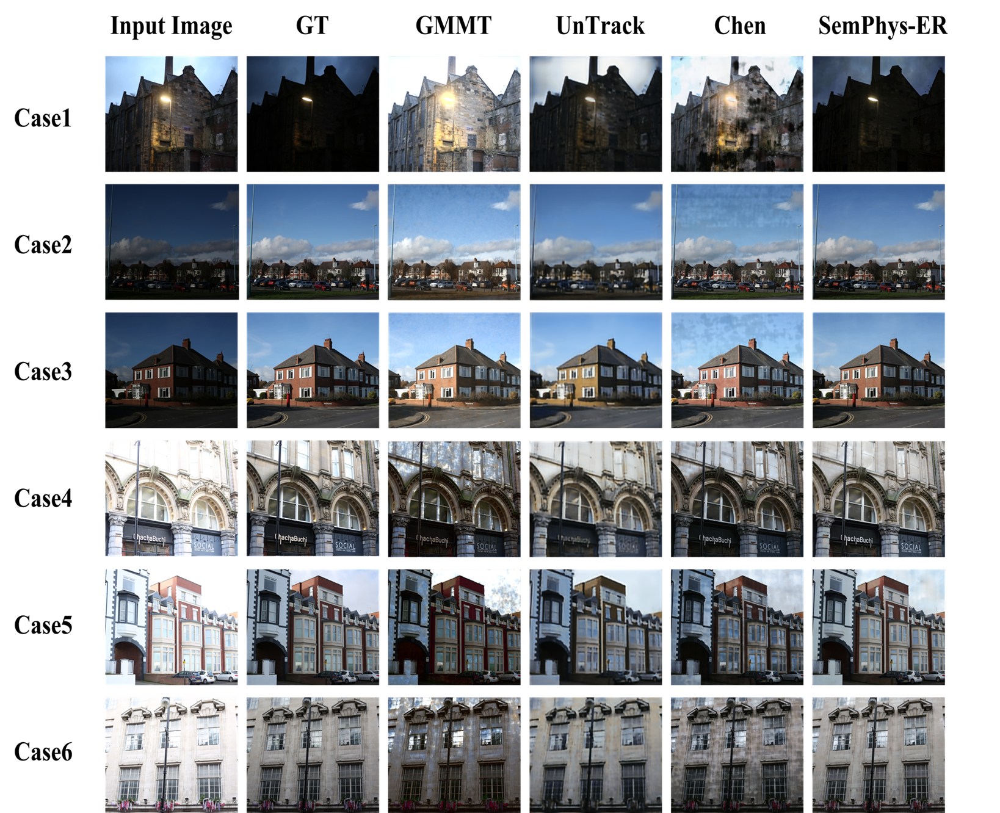

Beyond Cross-Spectral Complementarity: Semantic-Physical Interaction for RGB-IR Exposure Correction
Manuscript in revision.
Introduction
Extreme under- and overexposure destroys reliable visible measurements through noise-floor responses, saturation, and clipping, making RGB correction severely ill-posed. Registered infrared (IR) images alleviate this physical observation deficiency by providing scene-aligned cross-spectral evidence. However, existing fusion mechanisms do not adapt the contributions of spatial, frequency, and cross-modal cues to scene content, while IR structure alone cannot determine the missing visible color and appearance. We propose SemPhys-ER, a semantic-physical expert routing framework that uses learned context to organize, rather than replace, sensor-grounded evidence. At each encoder stage, SemPhys-ER constructs spatial, frequency, and cross-modal expert banks for RGB and IR. Frozen multi-level SigLIP features condition a semantic consistency router to predict spatially varying expert weights, followed by gated semantic fusion for visible-appearance reconstruction. On HDRT, SemPhys-ER achieves the best performance across all reported metrics, reaching 27.29 dB average PSNR and 0.8895 average SSIM. It outperforms the previous state-of-the-art RGB-IR method by 2.58/2.44 dB PSNR under low-/high-exposure conditions. Controlled ablations show that semantic priors remain beneficial after strong physical fusion, complement rather than replace aligned IR observations, and are most effective when coupled with physical-expert routing. On LLVIP, SemPhys-ER ranks first on seven of nine no-reference quality metrics, further supporting its cross-dataset perceptual generalization.

Method
At each encoder stage, separate RGB and IR streams construct spatial, frequency, and cross-modal experts. A semantic consistency router, conditioned on frozen multi-level SigLIP features, predicts spatially varying weights for these experts. Gated semantic fusion then adds contextual information after the physical evidence has been organized.

Experiments
HDRT quantitative comparison
| Method | LE PSNR ↑ | HE PSNR ↑ | LE SSIM ↑ | HE SSIM ↑ | Avg. PSNR ↑ | Avg. SSIM ↑ | LE LPIPS ↓ | HE LPIPS ↓ | LE VSIerr ↓ | HE VSIerr ↓ | LE EE ↓ | HE EE ↓ |
|---|---|---|---|---|---|---|---|---|---|---|---|---|
| Uncorrected | 10.83 | 7.87 | 0.3560 | 0.5122 | 9.35 | 0.4341 | 0.3755 | 0.3844 | 0.2623 | 0.3815 | 0.2634 | 0.3850 |
| SM-RGB | 20.98 | 18.47 | 0.7996 | 0.7805 | 19.73 | 0.7901 | 0.2120 | 0.2435 | 0.0678 | 0.0870 | 0.0650 | 0.0834 |
| RetinexNet | 12.31 | 10.20 | 0.5600 | 0.4653 | 11.25 | 0.5126 | 0.5367 | 0.5920 | 0.2204 | 0.2888 | 0.2250 | 0.2882 |
| Zero-DCE | 19.35 | 6.25 | 0.7982 | 0.4615 | 12.80 | 0.6299 | 0.1791 | 0.4707 | 0.0858 | 0.4595 | 0.0842 | 0.4560 |
| ECMEIQ | 17.36 | 16.20 | 0.5840 | 0.5863 | 16.78 | 0.5852 | 0.5139 | 0.5517 | 0.1176 | 0.1282 | 0.1123 | 0.1179 |
| CoTF | 21.06 | 19.57 | 0.8433 | 0.8215 | 20.32 | 0.8324 | 0.2644 | 0.2777 | 0.0671 | 0.0806 | 0.0327 | 0.0537 |
| CGNet | 21.89 | 17.04 | 0.8223 | 0.7475 | 19.46 | 0.7849 | 0.2001 | 0.2869 | 0.0667 | 0.1092 | 0.0654 | 0.1064 |
| RECNet | 16.65 | 15.35 | 0.6596 | 0.6418 | 16.00 | 0.6507 | 0.3731 | 0.3957 | 0.1292 | 0.1510 | 0.1268 | 0.1483 |
| Naive-Fuse | 21.08 | 19.38 | 0.7941 | 0.7761 | 20.23 | 0.7851 | 0.1908 | 0.2280 | 0.0653 | 0.0819 | 0.0642 | 0.0801 |
| HDRTNet | 19.68 | 20.34 | 0.7782 | 0.7937 | 20.01 | 0.7859 | 0.2449 | 0.2235 | 0.0673 | 0.0712 | 0.0655 | 0.0689 |
| SFAF-MA | 25.61 | 21.54 | 0.8353 | 0.8081 | 23.57 | 0.8217 | 0.1185 | 0.1698 | 0.0434 | 0.0647 | 0.0413 | 0.0621 |
| DFNet | 24.93 | 20.60 | 0.8373 | 0.8081 | 22.77 | 0.8227 | 0.2566 | 0.2618 | 0.0464 | 0.0702 | 0.0439 | 0.0678 |
| IVFuseNet | 22.37 | 19.75 | 0.7503 | 0.7240 | 21.06 | 0.7371 | 0.4161 | 0.4253 | 0.0579 | 0.0799 | 0.0481 | 0.0754 |
| UnTrack | 23.32 | 21.89 | 0.6712 | 0.6625 | 22.61 | 0.6669 | 0.5314 | 0.5446 | 0.0499 | 0.0578 | 0.0476 | 0.0548 |
| GMMT | 24.15 | 18.59 | 0.8224 | 0.6787 | 21.37 | 0.7505 | 0.2673 | 0.3687 | 0.0529 | 0.1052 | 0.0509 | 0.1024 |
| Chen et al. (2026) | 26.89 | 22.67 | 0.8601 | 0.8383 | 24.78 | 0.8492 | 0.1117 | 0.1645 | 0.0374 | 0.0530 | 0.0353 | 0.0501 |
| SemPhys-ER | 29.47 | 25.11 | 0.8966 | 0.8823 | 27.2897 | 0.8895 | 0.0927 | 0.1227 | 0.0249 | 0.0373 | 0.0228 | 0.0346 |
This comparison tests correction fidelity, perceptual similarity, and exposure error under both HDRT exposure conditions. SemPhys-ER leads on every reported metric; versus the strongest prior RGB-IR method, its PSNR gains are 2.58 dB for low exposure and 2.44 dB for high exposure.
Complementarity of IR and semantic features
| Setting | LE PSNR | HE PSNR | LE SSIM | HE SSIM |
|---|---|---|---|---|
| RGB only | 26.33 | 20.68 | 0.8700 | 0.8059 |
| RGB + IR | 26.89 | 22.67 | 0.8601 | 0.8383 |
| RGB + SigLIP | 29.12 | 24.65 | 0.8859 | 0.8721 |
| RGB + IR + SigLIP | 29.15 | 25.13 | 0.8948 | 0.8782 |
This controlled ablation asks whether semantic priors replace the aligned IR observation. Combining IR with SigLIP improves all four metrics over RGB + SigLIP, showing that the two sources provide complementary evidence.
Semantic injection strategy
| Gate | LE PSNR | HE PSNR | LE SSIM | HE SSIM |
|---|---|---|---|---|
| Scalar gate | 29.15 | 25.13 | 0.8948 | 0.8782 |
| Position-wise gate | 27.71 | 22.84 | 0.8800 | 0.8469 |
| RGB dynamic gate | 27.77 | 23.15 | 0.8840 | 0.8503 |
This table tests how to inject semantic features while keeping the features and fusion operation fixed. Scalar gating leads on all four metrics, supporting a simple global rescaling of the pretrained representation.
Multi-scale features and semantic consistency routing
| Setting | Multi-scale | SCR | LE PSNR | HE PSNR | LE SSIM | HE SSIM |
|---|---|---|---|---|---|---|
| Single Scale | – | – | 29.15 | 25.13 | 0.8948 | 0.8782 |
| + Multi-Scale | Yes | – | 29.13 | 24.77 | 0.8949 | 0.8752 |
| + SCR | – | Yes | 28.71 | 24.86 | 0.8939 | 0.8726 |
| SemPhys-ER | Yes | Yes | 29.47 | 25.11 | 0.8966 | 0.8823 |
This ablation tests whether multi-scale semantics and the router work together. Either component alone gives mixed or weaker results; their combination gives the best LE PSNR and both SSIM scores.
Choice of frozen visual encoder
| Encoder | Params | LE PSNR | HE PSNR | LE SSIM | HE SSIM |
|---|---|---|---|---|---|
| Chen et al. (2026) | – | 26.89 | 22.67 | 0.8601 | 0.8383 |
| SigLIP | 92.9M | 29.15 | 25.13 | 0.8948 | 0.8782 |
| CLIP-DataComp | 86.2M | 28.57 | 23.68 | 0.8927 | 0.8616 |
| DINOv2-base | 86.6M | 28.58 | 24.25 | 0.8876 | 0.8571 |
| SDXL VAE | 34.2M | 28.34 | 24.08 | 0.8900 | 0.8617 |
| FLUX VAE | 34.3M | 28.35 | 24.12 | 0.8918 | 0.8637 |
| UniTok (UMM) | 820.3M | 28.62 | 24.82 | 0.8904 | 0.8743 |
| TokenFlow (UMM) | 376.6M | 28.32 | 24.36 | 0.8929 | 0.8696 |
This controlled comparison tests which frozen visual representation best supports correction. SigLIP has the highest PSNR and SSIM under both exposure conditions in this configuration, so it is used for SemPhys-ER.
LLVIP cross-dataset image quality
| Metric | GMMT | UnTrack | Chen et al. | SemPhys-ER |
|---|---|---|---|---|
| TOPIQ-NR ↑ | 0.3807 | 0.1708 | 0.3761 | 0.4560 |
| BRISQUE ↓ | 22.7110 | 65.7148 | 6.3658 | 6.8320 |
| NIQE ↓ | 3.7265 | 8.4106 | 4.5644 | 3.3087 |
| PIQE ↓ | 36.2788 | 86.7685 | 31.6935 | 27.2184 |
| MANIQA ↑ | 0.2372 | 0.1417 | 0.2663 | 0.2596 |
| MUSIQ ↑ | 46.4331 | 26.9121 | 43.4319 | 53.3595 |
| MUSIQ-SPAQ ↑ | 47.7885 | 32.6238 | 28.6569 | 50.6600 |
| CLIPIQA+ ↑ | 0.3857 | 0.1978 | 0.3138 | 0.3908 |
| LIQE-Mix ↑ | 1.8753 | 1.0169 | 1.4359 | 2.3345 |
This table tests perceptual transfer to a different real-world RGB-IR dataset without paired normal-exposure targets. SemPhys-ER ranks first on seven of nine no-reference metrics and second on BRISQUE and MANIQA. These scores indicate perceptual preference, not reference-level reconstruction fidelity.
Visual Cases
